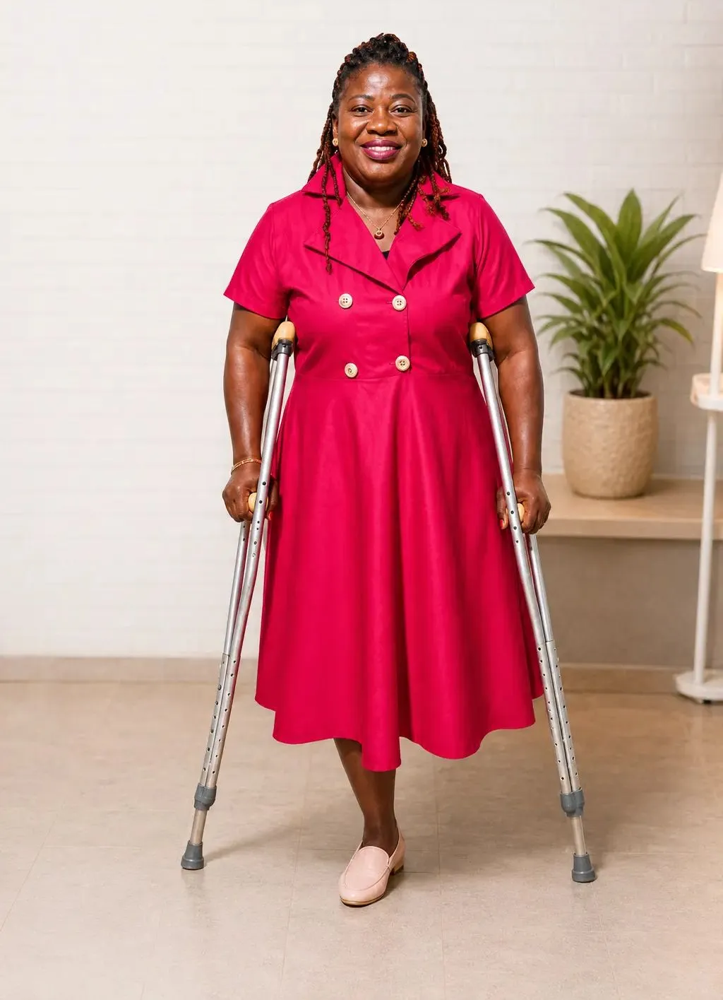
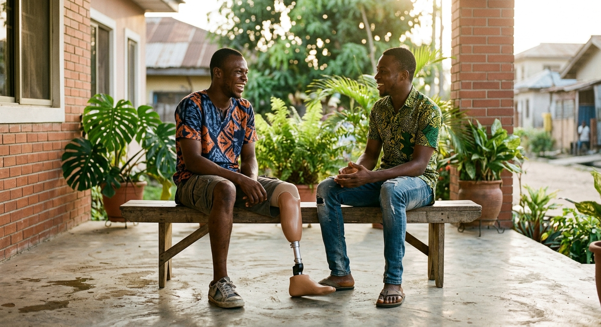

Support with compassion.
Providing practical, emotional, and empowering support that helps amputees and people living with disabilities thrive.
Restoring hope, rebuilding confidence and helping amputees rediscover purpose - one action, one story, one opportunity at a time.

Behind Restoring Hope for Amputees Foundation is a story of personal experience, resilience, and a desire to make a difference. Founded by Engnr. Oluyemisi Kareem, an amputee herself for more than 40 years, the foundation was born from a deep understanding of the challenges many amputees face — and a belief that losing a limb should never mean losing hope, purpose, or the opportunity to live a fulfilling life. Today, we are committed to supporting amputees through encouragement, empowerment, advocacy, counselling, mentorship, and access to opportunities that help them move forward with confidence. Your story doesn't end with amputation. There's still more ahead..
Read Stories of Hope →Providing practical, emotional, and empowering support that helps amputees and people living with disabilities thrive.
A society where disability does not diminish dignity, opportunity, belonging, or purpose.
Compassion, integrity, inclusion, courage, service, and hope.
We create pathways for people to regain confidence, access support, build skills and live with dignity.
Emotional support and guidance for individuals navigating life after amputation.
Helping people rebuild confidence, identity and emotional resilience.
Connecting beneficiaries with prosthetic solutions and relevant resources.
Creating opportunities for women to grow, thrive and become economically empowered.
Connecting people with encouragement, guidance and positive role models.
Equipping people with practical skills that can support independence.
Promoting disability inclusion, dignity, accessibility and equal opportunity.
Taking support, education and encouragement directly into communities.
Engr. Oluyemisi Kareem's journey with amputation spans more than four decades. What began as a personal experience of loss, resilience and adaptation became a deeper calling — to help other amputees rediscover hope, confidence and purpose.
Today, her story has become a mission to remind others that life does not end with amputation.
Real stories of resilience, dignity, confidence and new possibilities.

A childhood filled with play and running changed when she lost her limb at just six years old. Returning home and going back to school meant learning to live with a new reality—watching her friends play while she stood on the sidelines and facing the curiosity of other children. Her first prosthetic limb brought new challenges, but also the opportunity to walk, participate and hope again.
Read her story →
At six years old, she was asked whether she needed a prosthesis after losing her limb. Too young to understand the medical complexities, she knew only that she wanted to walk, return to school and play with her friends. Her simple answer—“Yes, I need one”—became a powerful expression of her desire for independence, opportunity and a future beyond amputation.
Read her story →“I thought my life had stopped. Then I discovered that I could still dream again.”— Engr Kareem Oluyemisi

10 March 2026


If you or someone you know is living with amputation or disability and needs support, we are here to listen, encourage and help you explore available resources.
Request emotional and personal support.
Ask about available prosthetic support and resources.
Connect with guidance and encouragement.
Explore empowerment opportunities and support.
Give your time, skills and compassion.
Use your experience to encourage someone else.
Collaborate to create greater impact.
Help provide direct support to someone in need.

Your support can help an amputee receive counselling, regain confidence, access rehabilitation, obtain a prosthetic solution, learn a skill, or discover that life still has purpose.
Donate now →Reach out to Restoring Hope for Amputees Foundation to request support, volunteer, partner, or discuss donations.
Contact Us → Email Us →